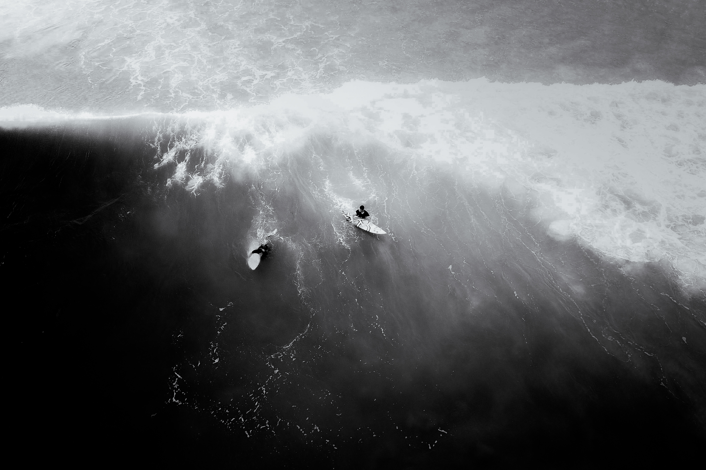

Leo Neves (Leonardo Neves) foi um surfista brasileiro nascido em 29 de outubro de 1979, natural do Rio de Janeiro. Radicado em Saquarema desde os 18 anos, iniciou sua carreira profissional em 1998. Destacou-se no cenário nacional ao conquistar o título de bicampeão brasileiro nos anos de 2002 e 2003. Após sua carreira competitiva, Leo dedicou-se ao ensino e desenvolvimento de novos talentos do surfe. Ele fundou o Centro de Treinamento de Surfe Léo Neves em Saquarema, com o objetivo de oferecer treinamento especializado a jovens surfistas, especialmente aqueles em situação de vulnerabilidade social.
 VOLTAR